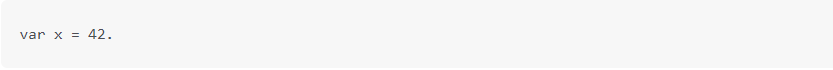
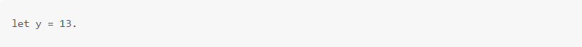
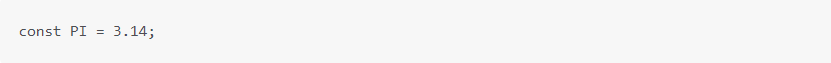
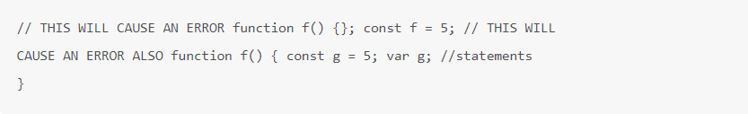
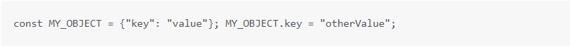

Introducción
JavaScript es un lenguaje de secuencias de comandos orientado a objetos y multiplataforma, contiene una biblioteca estándar de objetos, como Array, Date y Math, y un conjunto básico de elementos del lenguaje comooperadores, estructuras de control y declaraciones. JavaScript del lado del cliente amplía el lenguaje central al proporcionar objetos para controlar un navegador y su Modelo de objetos de documento (DOM).
Deberías saber que
En esta guía se supone que tiene los siguientes antecedentes básicos: -- Una comprensión general de Internet y la World Wide Web -- Buen conocimiento de trabajo del lenguaje de marcado del hipertexto (HTML). -- Algo de experiencia en programación.
JavaScript y Java
JavaScript y Java son
similares en algunos aspectos, pero fundamentalmente diferentes en
algunos otros. El lenguaje JavaScript se asemeja a Java, pero no tiene
la escritura estática de Java y la comprobación de tipos fuertes.
Variable
Las variables se utilizan como nombres simbólicos para los valores de la aplicación. Los nombres de las variables, denominados identificadores, se ajustan a ciertas reglas.
Declaración
Puede declarar una variable de tres maneras: Con la palabra clave var. por ejemplo
Simplemente asignándole un valor por ejemplo:
Con la palabra clave let. por ejemplo:

Variable Global
Las variables globales son, de hecho, propiedades del objeto global. En las páginas web, el objeto global es window, por lo que puede establecer y acceder a variables globales utilizando la sintaxis window.variable.
Constante
Puede crear una constante con nombre de solo lectura con la palabra clave const. La sintaxis de un identificador constante es la misma que para un identificador de variable: debe comenzar con una letra, un signo de subrayado o de dólar y puede contener caracteres alfabéticos, numéricos o de subrayado.
No se puede declarar una constante con el mismo nombre que una función o variable en el mismo ámbito. por ejemplo:

Sin embargo, los atributos de objeto no están protegidos, por lo que la siguiente instrucción se ejecuta sin problemas.

Tipos de datos
El último estándar ECMAScript define siete tipos de datos:seis tipos de datos que son primitivos: